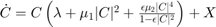

cdot
dCdt = cdot(M, nx, cx)
Calculates time derivative for a single connection M.n{nx}.con{cx}Input arguments: M Model nx Target network id cx Connection id
Output: dCdt Time derivative of connection states
Contents
function [dCdt] = cdot(M, nx, cx)
Initialize variables and stimulus
con = M.n{nx}.con{cx};
C = con.C;
kappa = con.kappa;
lambda = con.lambda;
mu1 = con.mu1;
mu2 = con.mu2;
e = con.e;
nType = con.nType;
no11 = con.no11;
if con.nSourceClass == 1
y = M.s{con.source}.z;
else
y = M.n{con.source}.z;
end
z = M.n{con.target}.z;
Input to connection rule
switch nType % cases ordered by frequency of use case 1 % 1freq X = kappa.*(z * y'); case 6 % all2freq if no11 % remove 1:1 (and subsequent n:n) monomials X = kappa.*(P(e, z) * P(e, y') - P(e^2, z*y')); else X = kappa.*(P(e, z) * P(e, y')); end case 7 % allfreq if no11 X = kappa.*(P(e, z) * P_new(e, y') ... - P(e^2, z*y') .* repmat(A(e^2, abs(y').^2), M.n{nx}.N, 1)); else X = kappa.*(P(e, z) * P_new(e, y')); end case 2 % 2freq Y = repmat(y', con.targetN, 1); % conjugate transpose is what we want Z = repmat(z , 1, con.sourceN); NUM = con.NUM; DEN = con.DEN; X = kappa.*con.epsc.*((Z.^DEN) .* (Y.^NUM)); case 5 % active if no11 X = kappa.*((sqrt(e)*z.*P(e, z)) * y'); else X = kappa.*(P(e, z) * y'); end otherwise % 3freq or 3freqall Y1 = y(con.IDX1); Y1(~con.CON1) = conj(Y1(~con.CON1)); Y2 = y(con.IDX2); Y2(~con.CON2) = conj(Y2(~con.CON2)); Z = z(con.IDXZ); NUM1 = con.NUM1; NUM2 = con.NUM2; DEN = con.DEN; Y1NUM1 = (Y1.^NUM1); Y2NUM2 = (Y2.^NUM2); ZDEN = (Z .^DEN); X = kappa.*con.epsc.*ZDEN.*Y1NUM1.*Y2NUM2; end X = single(X);
The differential equation

dCdt = C.*(lambda + mu1.*abs(C).^2 + e*mu2.*(abs(C).^4)./(1-e*abs(C).^2)) + X;
Nonlinear Function Definitions
function y = P(epsilon, x) y = ( x ./ (1 - sqrt(epsilon)*x) ); function y = P_new(epsilon, x) y = ( x ./ (1 - sqrt(epsilon)*x) ) .* ( 1 ./ (1 - sqrt(epsilon)*conj(x) )); %y = y - Pc(epsilon, x); function y = A(epsilon, z) y = ( 1 ./ (1 - sqrt(epsilon)*conj(z) )); function y = Pc(epsilon, x) y = ( sqrt(epsilon)*x.*conj(x) ./ (1 - epsilon*x.*conj(x)) ); function y = Ac(epsilon, x, z) y = ( sqrt(epsilon)*x.*conj(z) ./ (1 - epsilon*x.*conj(z)) ); function y = H(epsilon, r) y = (epsilon * r.^4 ./ (1- epsilon * r.^2) ); function y = Sc(epsilon, z2, z1) y = ( sqrt(epsilon)*z2*z1' ./ (1 - sqrt(epsilon)*z2*z1') ); % should this be sqrt(epsilon) in the denominator? % Ask Ji Chul to verify